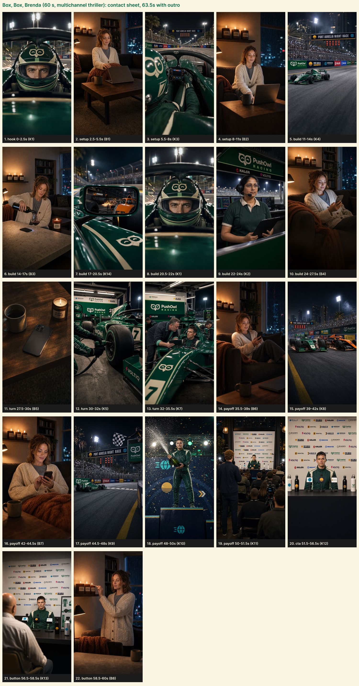

Leading the night race, Theo's real race is for Brenda's abandoned cart: PushOwl chases her through push, email and SMS, and a WhatsApp discount finally wins her back as he takes the chequered flag. Positioning: PushOwl is a multichannel retention platform: web push, email, SMS and WhatsApp work together, automatically, until the order comes back.
300 km/h, and the radio call is about Theo's candle shop: Brenda abandoned her cart.
PushOwl's on it: a web push. Brenda dismisses it.
Email, unopened. SMS, seen and ignored. The rival closes in; the stakes rise with every miss.
Silence. Then the pit stop: one more shot, WhatsApp, ten percent off.
Brenda smiles, orders; Theo overtakes and wins. The race and the order.
My store sells while I race. Thanks to PushOwl. Sign up free on Shopify.
Who's Brenda? Best customer. Brenda lights the candle.
Seedance 2.5 generates up to 30 s per prompt, so the 60 s film is two continuous takes: part A (0 to 30 s) and part B (30 to 60 s). The model makes every cut, camera move and sound inside each part.
Part A ends on Brenda's phone going dark and the score cutting to silence after the third miss. Part B opens on the pit-stop impact with the full score slamming back. The only seam sits on a moment where silence then a hit is the point.
Dialogue, radio, engines, rain, notification chimes and a timecoded thriller score are all generated in the video. Nothing is added afterwards except loudness levelling and the outro, where the score's final hit rings out.
The branded world, cast and 12 cut-4 keyframes are reused. New: Brenda (sheets, apartment, 9 keyframes), the Burnt Rubber candle board, and 8 new graphics.
| Time | Picture | Dialogue | Motion graphics |
|---|---|---|---|
| 0.0 to 2.5s hook | 1. Theo's calm eyes behind the visor at 300 km/h, sparks and floodlights streaking extreme close up through the visor slit, camera mounted inside the cockpit, fixed to the car, part A | Priya Nandy (radio / off): “Theo. Your store. Brenda just abandoned her cart.” | timing tower with lap counter LAP 41 / 58, VAN P2 Cart abandoned card (Brenda, 3 candles) |
| 2.5 to 5.5s setup | 2. Brenda on the sofa closes her laptop with a sigh and pulls the blanket up new medium wide, slow push-in, part A | no dialogue | |
| 5.5 to 8.0s setup | 3. Theo's gloved hands on the wheel, the wheel display glowing, the street circuit rushing at camera over the shoulder onboard, steering wheel and track ahead, fixed to the car, part A | Theo Vance (radio / off): “Relax. PushOwl's on it.” | Recovery tracker HUD: four chips Push, Email, SMS, WhatsApp; Push lights 'sending' |
| 8.0 to 11.0s setup | 4. The laptop on the coffee table lights up with a notification glow; Brenda glances at it and flicks it away without interest new medium close up, fixed, part A | no dialogue | real web push drops, then is swiped away with a red DISMISSED stamp |
| 11.0 to 14.0s build | 5. The PushOwl Racing car blasts past the barrier boards under the start-finish gantry wide, long lens trackside, pan left to right following the car, part A | Priya Nandy (radio / off): “Push dismissed. Sending the email.” | |
| 14.0 to 17.0s build | 6. At the kitchen island Brenda pours a glass of red wine; her phone lies face down on the stone and buzzes, the edge of the screen glowing; she ignores it new medium, slow pan, part A | no dialogue | abandoned-cart email card lands, then an UNOPENED status stamp |
| 17.0 to 20.5s build | 7. In the PushOwl Racing car's side mirror the orange Ember Racing car grows closer, sparks under it new extreme close up, fixed to the car, part A | Priya Nandy (radio / off): “Email's unopened. And Castell's closing.” | gap readout CAS +0.3 s CLOSING, red pulse |
| 20.5 to 22.0s build | 8. Theo's calm eyes behind the visor at 300 km/h, sparks and floodlights streaking extreme close up through the visor slit, camera mounted inside the cockpit, fixed to the car, part A | Theo Vance (radio / off): “Text her.” | |
| 22.0 to 24.0s build | 9. Priya keys her headset and speaks, eyes on the screens medium close up, slow push-in, part A | Priya Nandy: “SMS going out.” | SMS bubble on a phone frame, then SEEN 10:31 and a grey 'no reply' |
| 24.0 to 27.5s build | 10. Brenda on the sofa reads her phone, its glow on her face, gives a wry smirk and sets it face down on the cushion new close up, slow push-in, part A | no dialogue | |
| 27.5 to 30.0s turn | 11. The phone face down on the coffee table, its edge glow fading to black, rain shadows moving across the table new insert, fixed, part A | no dialogue | tracker HUD: Push, Email, SMS all red crosses; WhatsApp dark; hold into black |
| 30.0 to 32.0s turn | 12. A crew member's wheel gun hits the wheel nut, sparks, the tyre comes off tight insert, fixed, part B | no dialogue | |
| 32.0 to 35.5s turn | 13. Marcus leans into the cockpit and holds the tablet toward Theo, speaking medium, slow push-in, part B | Marcus Cole: “One more shot. WhatsApp. Ten percent off.” | |
| 35.5 to 39.0s payoff | 14. Brenda's phone buzzes; she picks it up, reads, and a real smile spreads new medium close up, slow push-in, part B | no dialogue | real WhatsApp message with a discount code chip BRENDA10, 10% off |
| 39.0 to 42.0s payoff | 15. The PushOwl Racing car dives inside the orange rival car into turn one wide, side by side, pan left to right, part B | Theo Vance (radio / off): “Come on, Brenda.” | tower swap VAN to P1 on the overtake |
| 42.0 to 44.5s payoff | 16. Brenda taps her phone decisively and grins, pulling the blanket up new close up, fixed, part B | no dialogue | Shopify order toast $86.40 (10% off) + Recovered by PushOwl stamp; tracker WhatsApp turns green |
| 44.5 to 48.0s payoff | 17. The chequered flag waves as the PushOwl Racing car crosses the line under the gantry, crowd erupting wide, fixed, part B | Priya Nandy (radio / off): “Congrats, Theo. You won the race. And the order.” | RACE WON / ORDER WON double stamp |
| 48.0 to 50.0s payoff | 18. Theo sprays champagne, then lowers the bottle and sniffs the neck like a candle, eyes closed medium close up, slow push-in, part B | no dialogue | |
| 50.0 to 51.5s payoff | 19. The press room: flashes pop, Journalist A stands with a microphone to ask wide, fixed, part B | Journalist A: “Theo, what's your secret?” | |
| 51.5 to 56.5s cta | 20. Theo leans into the microphones and answers straight down the lens medium close up, slow push-in, part B | Theo Vance: “My store sells while I race. Thanks to PushOwl. Sign up free on Shopify.” | channel orbit with labels Push, Email, SMS, WhatsApp around the owl, beside Theo SIGN UP FREE stack |
| 56.5 to 58.5s button | 21. Journalist B asks, Theo leans back with a small smile medium, fixed, part B | Journalist B: “Who's Brenda?” Theo Vance: “Best customer.” | |
| 58.5 to 60.0s button | 22. Brenda strikes a match, lights a Burnt Rubber Candle Co. candle, leans in and sniffs it, eyes closed new medium close up, slow push-in, part B | no dialogue | |
| 60 to 64s | Outro v2: owl assembles from the channel icons, SIGN UP FREE, App Store card at 4.8, Install on Shopify | the part B score's final hit rings out |
| At | Cue | Lands on |
|---|---|---|
| 0.2s | timing tower with lap counter LAP 41 / 58, VAN P2 new | left margin |
| 2.4s | Cart abandoned card (Brenda, 3 candles) | on 'abandoned' |
| 6.0s | Recovery tracker HUD: four chips Push, Email, SMS, WhatsApp; Push lights 'sending' new | top right; returns updated at each miss |
| 8.0s | real web push drops, then is swiped away with a red DISMISSED stamp new | on the flick |
| 14.2s | abandoned-cart email card lands, then an UNOPENED status stamp new | on the buzz |
| 17.4s | gap readout CAS +0.3 s CLOSING, red pulse new | on 'closing' |
| 22.3s | SMS bubble on a phone frame, then SEEN 10:31 and a grey 'no reply' new | on 'SMS going out' |
| 27.6s | tracker HUD: Push, Email, SMS all red crosses; WhatsApp dark; hold into black new | stakes before the silence |
| 35.6s | real WhatsApp message with a discount code chip BRENDA10, 10% off new | on the buzz |
| 39.2s | tower swap VAN to P1 on the overtake | on 'Brenda' |
| 42.1s | Shopify order toast $86.40 (10% off) + Recovered by PushOwl stamp; tracker WhatsApp turns green new | on the tap |
| 45.6s | RACE WON / ORDER WON double stamp | 'race' then 'order' |
| 52.4s | channel orbit with labels Push, Email, SMS, WhatsApp around the owl, beside Theo new | right column on 'PushOwl' |
| 54.3s | SIGN UP FREE stack | left column on 'free' |
| 60.0s | outro v2 (4 s) | after the candle |
The recovery tracker (four chips: Push, Email, SMS, WhatsApp) is the thriller's scoreboard. It comes back after each miss with a red cross, and turns green on WhatsApp when the order lands.

| Item | Cost |
|---|---|
| New keyframes and Brenda's sheets (Replicate, done) | about $1.80 |
| Part A and part B, 2 takes each, 30 s at 720p (treg) | $32.00 |
| 8 new motion graphics (HyperFrames) | $0 |
| Transcription checks | about $0.20 |
| Total | about $34 |